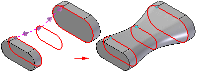
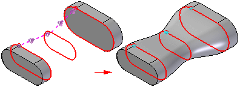
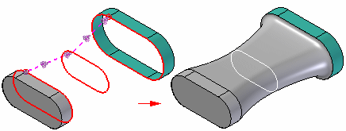
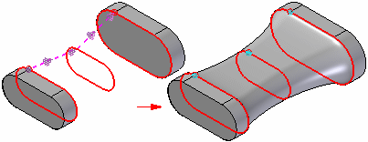
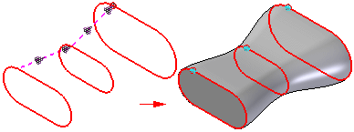
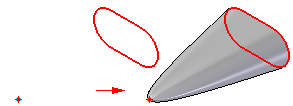

End Conditions
You can control end conditions, the shape of the loft feature where it meets the first and last cross sections, with several options. The options available for defining end conditions depend on the type of element you selected to define the cross section.
For example, if you want to be able to control the tangency of a BlueSurf feature with respect to an adjacent surface, use an edge on the surface as the cross section rather than, for example, the sketch that was used to construct the adjacent surface.
Some end condition options add variables to the variable table, which you can then edit to control the shape of the feature.
-
Natural—There is no constraining condition enforced at the end. This is the default end condition and is valid for any cross section type.

-
Tangent Continuous—The end cross sections defined using part edges and construction curves support a tangent condition. The tangent vector for the loft is determined by the adjacent surfaces. A variable is added to the Variable Table, which you can edit to control the shape of the lofted feature. With lofts constructed using the BlueSurf command, you can also adjust the surface shape using a graphic handle.

-
Curvature Continuous—End cross sections defined using part edges, construction curves, and construction surfaces support a curvature continuous condition. A variable is added to the Variable Table, which you can edit to control the shape of the lofted feature. With lofts constructed using the BlueSurf command, you can also adjust the surface shape using a graphic handle.

-
Tangent Interior—The end cross sections defined using part edges and construction surfaces support a tangent interior condition. Tangent Interior forces the loft to be tangent to the inside faces. A variable is added to the Variable Table, which you can edit to control the shape of the lofted feature. With lofts constructed using the BlueSurf command, you can also adjust the surface shape using a graphic handle.

-
Normal to Section—End cross sections defined using a sketch that are planar support a normal to section end condition. The loft is perpendicular to the reference plane of the sketched cross section. A variable is added to the Variable Table, which you can edit to control the shape of the lofted feature. With lofts constructed using the BlueSurf command, you can also adjust the surface shape using a graphic handle.

-
Parallel to Section—End cross sections defined using a point element support a parallel to section end condition. The loft is tangent to the reference plane on which the point element was drawn. A variable is added to the Variable Table, which you can edit to control the shape of the lofted feature.
